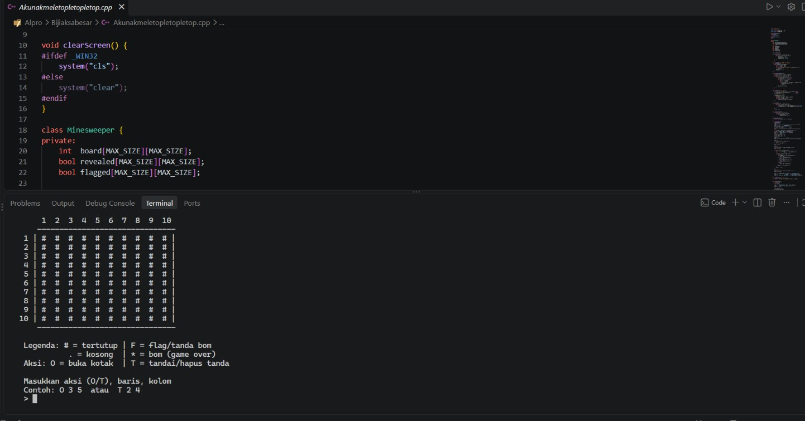
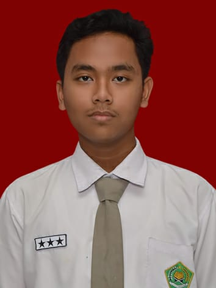
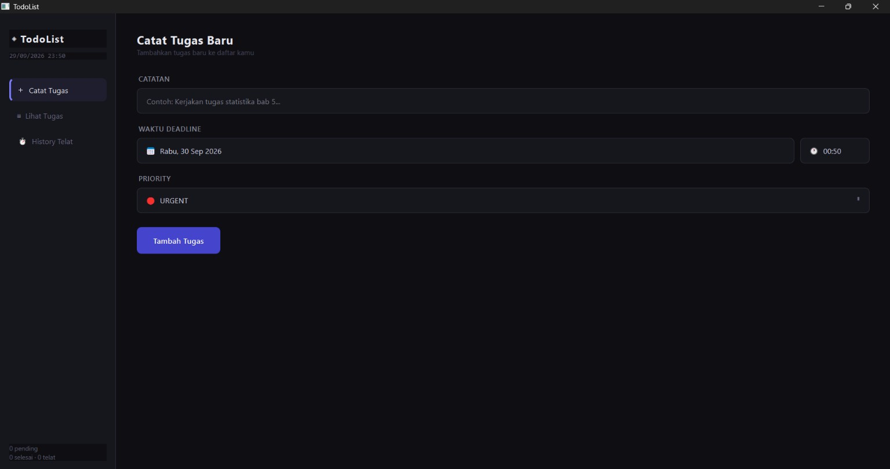
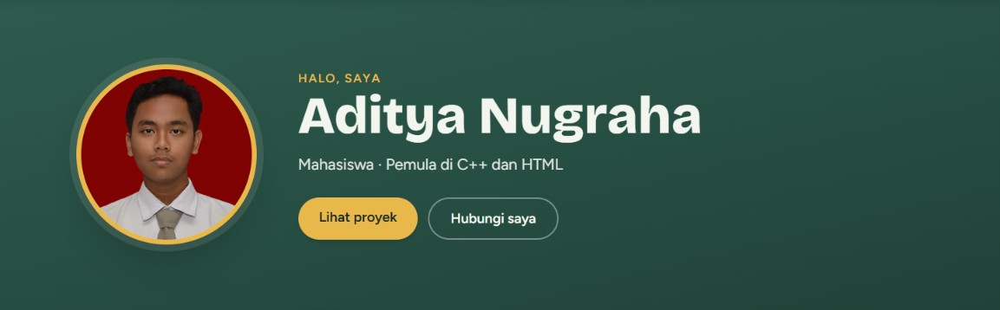

MineSweeper Sederhana
MineSweeper berbasis C++ yang berjalan di Terminal
- C++


Saya Adit, mahasiswa yang suka belajar pemrograman. Saya tertarik pada C++ dan sedang belajar membuat tampilan website dengan HTML, CSS, dan Tailwind.
Beberapa proyek yang pernah saya kerjakan.
MineSweeper berbasis C++ yang berjalan di Terminal

Mencatat tugas serta deadlinenya, user juga bisa menentukan urgensinya di app ini

Halaman portofolio responsif ini, dibuat dengan HTML dan Tailwind CSS.

Ingin berdiskusi atau berkolaborasi? Kirim email ke saya.
adityanugraha@students.usu.ac.id